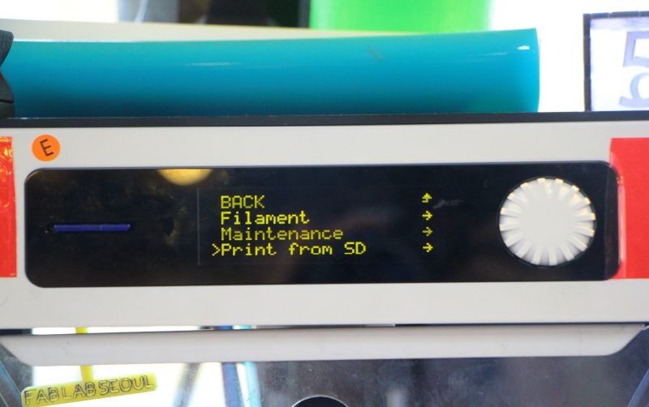

All content © 2016 Eduardo Chamorro (except where otherwise noted) Some rights reserved.
All content © 2016 Eduardo Chamorro (except where otherwise noted) Some rights reserved.Licensed under a Creative Commons Attribution-NonCommercial-ShareAlike 3.0 Unported License
We have found that some early adopter user have problems to 3d print objects.So we have make a quick "how to" guide.
Execute the program called "Cura" on the Imacs computers desktop
바탕화면에서 Cura 프로그램을 실행시킨다.
Using the "Load file"button to bring up the design file in the digital printing platform.
버튼을 이용해 디자인 파일을 불러온다.
After centering the design,set printing parameters(Layer height, shell thickness, density, etc.)
디자인을 중앙정렬 한 후 세부사항을 설정한다. ( 레이어 높이, 쉘 두께, 밀도 등)
/* Fast print Layer height 0.3 Shell Thickness 0.8 Bottom/top 0.8 Fill density 10-15% Print speed 60 Printing temperature 225 Bed temperature 70 /* Normal print Layer height 0.15 Shell Thickness 1.2 Bottom/top 1.2 Fill density 10-20% Print speed 50 Printing temperature 225 Bed temperature 70 /* Best print (very,very slow) Layer height 0.10 Shell Thickness 1.2 Bottom/top 1.2 Fill density 20-30% Print speed 30 Printing temperature 225 Bed temperature 70
After confirming the time and save it as a file GCode. [File-Save GCode]
소요시간을 확인한 후 GCode 파일로 저장한다.[File-Save GCode]
Check that there is enough filament left in the back of the printer.
본체 뒷면에 필라멘트의 양이 충분한지 확인한다.
Check that the filament comes to the noozle intake and outake correctly
원하는 색상의 재료와 필라멘트가 노즐에 꽂혀져 있는지 확인한다.
Save the file by inserting the SD card into the back of the computer,remember to eject the SD card properly ( righ click/eject)
본체 뒷면에 SD카드를 삽입하여 파일을 옮겨 저장한다.
Insert the SD card into the 3D printer machine, press the white button on the center.
3D프린터 기계에 SD카드를 삽입 후 흰색 버튼의 중앙을 누른다.
Turn the white button and press the menu window Print From SD
.흰색 버튼을 돌려 메뉴창의 Print From SD 를 누른다.

Select your file by rotating the white clickwheel.The 3d printer will start after the nozzle it is heated.(Wait until it starts to check everything is fine)
Once the product is completed, slowly detach the product.
흰색 버튼을 돌려 자신의 파일을 찾아 클릭하면 노즐이 가열 된 후 작동한다.
제품 출력이 완료되면 천천히 제품을 떼어낸다.
All content © 2016 Eduardo Chamorro (except where otherwise noted) Some rights reserved.